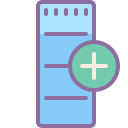

<!-- Nav Bar -->
<nav class="navbar navbar-dark navbar-expand-lg fixed-top z-depth-1" data-aos="fade-down">

    <button class="navbar-toggler" type="button" data-toggle="collapse" data-target="#navbarSupportedContent" aria-controls="navbarSupportedContent" aria-expanded="false" aria-label="Toggle navigation">
      <span class="navbar-toggler-icon"></span>
    </button>
  
    <div class="collapse navbar-collapse" id="navbarSupportedContent">
  
      <ul class="navbar-nav mr-auto mt-2 mt-lg-0">
        <li class="nav-item">
          <a id="home" style="color: white" class="nav-link waves-light" (click)="checkMenuChoosen(1)" [ngClass]="{'btn-active': (menuIsActived == 1)}" routerLink="/menu/home" routerLinkActive="active" mdbWavesEffect>Accueil</a>
        </li>
        <li class="nav-item">
          <a id="about" style="color: white" class="nav-link waves-light" (click)="checkMenuChoosen(2)" [ngClass]="{'btn-active': (menuIsActived == 2)}" routerLink="/menu/about" routerLinkActive="active" mdbWavesEffect>A propos</a>
        </li>
        <li class="nav-item">
          <a id="addList" style="color: white" class="nav-link waves-light" (click)="checkMenuChoosen(3)" [ngClass]="{'btn-active': (menuIsActived == 3)}" routerLink="/menu/addList" routerLinkActive="active" mdbWavesEffect>Ajouter une liste</a>
        </li>
        <li class="nav-item">
            <a id="checkList" style="color: white" class="nav-link waves-light" (click)="checkMenuChoosen(4)" [ngClass]="{'btn-active': (menuIsActived == 4)}" routerLink="/menu/showLists" routerLinkActive="active" mdbWavesEffect>Consulter mes listes</a>
        </li>
          <li class="nav-item">
            <a id="addProduct" style="color: white" class="nav-link waves-light" (click)="checkMenuChoosen(5)" [ngClass]="{'btn-active': (menuIsActived == 5)}" routerLink="/menu/addProduct" routerLinkActive="active" mdbWavesEffect>Ajouter un produit</a>
          </li>
      </ul>

      <ul style="margin-right: 8px;" class="navbar-nav ml-auto nav-flex-icons">
        <li class="nav-item">
          <a style="color: white" class="nav-link waves-effect waves-light material-tooltip-main" (click)="onLogout();" matTooltip="Déconnexion" target="_blank" data-toggle="tooltip" data-placement="bottom">
            Déconnexion
            
          </a>
        </li>
      </ul>

    </div>
  </nav>
  